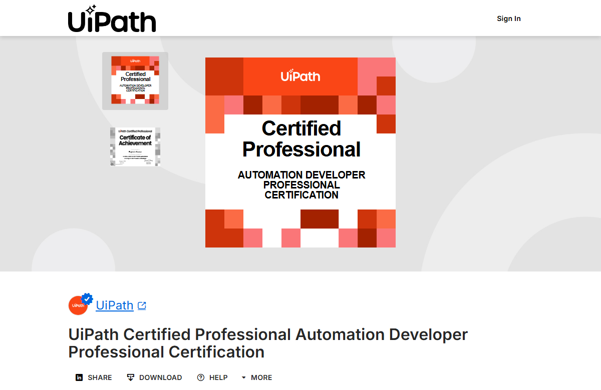

RPA Developer | Process Automation Specialist | EY HR Unit
Building RPA Bots That Move Faster, Fail Safer, and Scale Cleaner
I am Rajnish Kumar, an RPA Developer with 4+ years of experience designing, developing, deploying, and stabilizing enterprise automation solutions across UiPath, Blue Prism, Power Automate Desktop, and Power Automate Cloud.
RPA Flow Blueprint
Trigger
Validate
Queue
Run Bot
Decision
Retry
Report
UiPath
Blue Prism
Power Automate
Integrations
My prior automation experience spans finance and retail domains through card operations, voucher workflows, web apps, mainframes, and stakeholder notifications. I currently work in the HR domain with talent operations automations across employee lifecycle, payroll monitoring, department shifts, job code updates, API integration, Control Room management, exception handling, and test automation.
Impact Metrics
Proof of Automation Impact Across Speed, Stability, Cost, and Accuracy
Professional Core
Results-Driven RPA Development Across Platforms, Processes, and Teams
Professional Summary
I design, develop, and deploy automation solutions using UiPath, Blue Prism, and Power Automate. My work focuses on reducing manual effort, improving processing speed, strengthening exception handling, and keeping production bots stable through Control Room discipline.
I have worked with workforce management, HR operations, web applications, mainframes, Outlook, APIs, databases, and ML-driven process optimization. I collaborate with business analysts and stakeholders to translate process pain into reliable automation delivery.
Core Competencies
- UiPath RE-Framework implementation, logging, exception handling, and application initialization
- Blue Prism Control Room operations, scheduler configuration, bot monitoring, session management, and issue resolution
- API integration, credential handling, environment variables, web services, JSON/XML, HTTP requests
- Database automation with OLEDB, MySQL, SQL Server, Oracle, and data table manipulation
- PDD and SDD documentation, Azure DevOps, Git, Agile/SCRUM, Selenium, UiPath Test Suite, UAT support
Experience Map
Enterprise Automation Delivery at EY and Infosys
Feb 2025 - Present
Senior Associate - RPA Developer
Ernst & Young (EY) | Talent Team
- Developed and deployed 10+ RPA solutions using Power Automate, Blue Prism, and UiPath for talent management processes.
- Automated employee termination, payroll monitoring, department shifts, and job code updates with accuracy and compliance focus.
- Engineered secure Blue Prism API integrations using Credential Manager and environment variables for PII data transmission.
- Optimized data entry workflows using OLEDB automation, reducing processing time and minimizing manual errors.
- Implemented recovery and resume-stage exception handling to improve workflow stability and reduce downtime.
- Managed Blue Prism infrastructure and Control Room operations, including scheduler configuration, bot monitoring, session management, and production issue resolution.
Dec 2021 - Jan 2025
Systems Engineer - RPA Developer
Infosys Limited | Clients: PepsiCo, American Express
- Deployed 20+ high-performance automation bots using UiPath and Blue Prism.
- Led UiPath RE-Framework implementation for logging, exception handling, application initialization, and enterprise-grade stability.
- Built ML-driven process optimization models, improving system performance and enabling predictive maintenance capabilities.
- Used PowerShell and automation scripting to automate repetitive tasks across web, mainframe, and desktop applications.
- Promoted SCRUM methodologies in RPA solution delivery, improving time-to-market and cross-functional collaboration.
- Worked with business analysts and stakeholders to create Process Definition Documents and align technical delivery with business goals.
Delivery Portfolio
RPA Project Missions Across HR, Finance, Retail, and Support
Blue Prism | HR Security | Compliance
Employee Termination Process Automation
Developed an end-to-end Blue Prism automation for termination workflows covering account deactivation, access revocation, exit documentation, and final settlements across multiple web applications.
- Reduced processing time from 4 hours to 30 minutes per case.
- Supported security protocols and eliminated manual errors.
UiPath / Blue Prism | Mainframe | US Operations
Card Replacement Automation
Built a bot to retrieve and validate card replacement data from 2 web applications and 1 mainframe system, initiate replacement orders, verify confirmations, and notify stakeholders.
- Processed 500+ daily transactions.
- Reached 99.8% accuracy with audit logging and real-time error reporting.
Web App | Mainframe | Outlook
Taj Voucher Generation System
Automated voucher generation by integrating a web application, mainframe system, and Outlook for transaction analysis, voucher creation, and stakeholder notification.
- Reduced voucher generation time by 70%.
- Implemented comprehensive logging for audit compliance.
HR Operations | Monitoring | Compliance
Payroll Monitoring Automation
Automated payroll monitoring checks for HR operations, helping teams identify exceptions faster and reduce repetitive validation effort.
HR Operations | Data Updates | Accuracy
Department Shift and Job Code Update Automation
Automated department shift and job code update workflows to improve HR data accuracy and reduce manual update cycles.
HR Domain | Talent Operations | Lifecycle
Employee Lifecycle Operations
Supported HR lifecycle automation across termination, access revocation, payroll monitoring, and talent data update processes.
UiPath | API | Data Extraction
OpenWeather_Temperature_Extraction_Using_API_UiPath
LinkedIn project focused on API-driven temperature extraction using UiPath, demonstrating HTTP requests, response handling, and structured automation output.
UiPath | RE-Framework | Challenge Automation
RPA Challenge_Using_UiPath_Re-Framework
LinkedIn project demonstrating UiPath RE-Framework usage for structured automation, logging, exception handling, and repeatable process execution.
C# | Windows Services | Power Automate
BotFarmController
Control layer concept for monitoring, restarting, and validating RPA machines with audit-ready status checks and automation operations.
Playwright | RPA Tooling | Selector Design
PAD Selector Assistant
Developer utility idea for capturing browser context and producing resilient selectors for faster Power Automate Desktop development.
Technical Stack
A Practical Stack for RPA Build, Test, Integration, and Operations
RPA Platforms
UiPath StudioUiPath OrchestratorBlue PrismPower Automate DesktopPower Automate CloudBlue Prism Control Room
Frameworks & Patterns
UiPath RE-FrameworkBlue Prism Object StudioState Machine Design PatternException HandlingPDD/SDD Documentation
Programming & Scripting
VBScriptC#PowerShellJavaScriptAdvanced Prompt Engineering
Data, Integration & Testing
MySQLSQL ServerOracle DatabaseOLEDBWeb ServicesJSON/XMLHTTP RequestsSelenium WebDriverUiPath Test SuiteAzure DevOpsGitUKG Workforce Management
Proof Layer
Certifications, Education, Awards, and Recognition

View UiPath CertificateCertifications
- UiPath Advanced RPA Developer (ADPv1) Certified
- Infosys Certified RPA Professional
- Blue Prism Developer, Infosys Internal Certification
- BCEP Levels 1, 2, and 3 from Learnship
- Coursera and upGrad credentials in teamwork, C++, communication, programming fundamentals, and management essentials
Awards & Recognition
- EY Emerging Extraordinaire, May 2025
- 2x Infosys Insta Award recognition for automation excellence and client deliverables
- Toycathon-21 Semi-Finalist organized by the Government of India
- 95%+ customer satisfaction ratings across automation projects
Education
- Master of Computer Application (MCA), Indira Gandhi National Open University, Delhi, 2022 - 2024
- Bachelor of Computer Application (BCA), IIMT College of Management, CCS University, Meerut, 2018 - 2021, 82%
LinkedIn Recommendation Theme
Recommended for strong hands-on expertise across Blue Prism, UiPath, and Power Automate, plus collaborative delivery and reliable team contribution.
Open LinkedIn profileContact
Let Us Talk About RPA Delivery, Support, And Process Transfor- mation
Available for RPA Developer and Process Automation Specialist opportunities involving UiPath, Blue Prism, Power Automate, API integration, bot operations, and automation delivery.